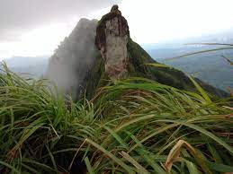

Kottayam is a city in the Indian state of Kerala. Flanked by the Western Ghats on the east and the Vembanad Lake and paddy fields of Kuttanad on the west, Kottayam is a place that is known for extraordinary qualities. It is the district headquarters of Kottayam district, located in south-west Kerala.

One of the highest peaks in the vicinity, Illikkal Kallu comprises of three different hills- each rising to at least 4000 ft above the sea level. Boasting of mystical surroundings, hills imbued with a green blanket and an overall idyllic setting, the destination is blessed with bounteous natural bliss and is still unexploited and untapped by tourism. Above all, the sunset view as seen from the peak is absolutely riveting; the moon rises adjacently as the orange sun goes down. Also, the winding roads leading to the majestic boulders can give an adrenaline rush to all the adventure junkies.
The Kumarakom Bird Sanctuary, also popularly known as the Vembanad Bird Sanctuary, is a breathtaking and beautiful bird sanctuary that is located at Kumarakom in the Kottayam district in the Indian state of Kerala. Situated on the banks of the Vembanad Lake in the Kerala Backwaters, this bird sanctuary is a favourite destination for many native as well as migratory birds, which makes the place a dreamland full of ecstasy and delight for bird watchers and nature lovers.

A fascinating cave carved out of rock surface is Kottathavalam lying on the top of a Murugan Hills at Kurisumala. The cave is considered to be the resting place for Madura Royal family. The cave is adorned with various sculptures of Gods and Goddesses along with the sculptures of weapons used in the ancient times giving us a glance into the amazing past.